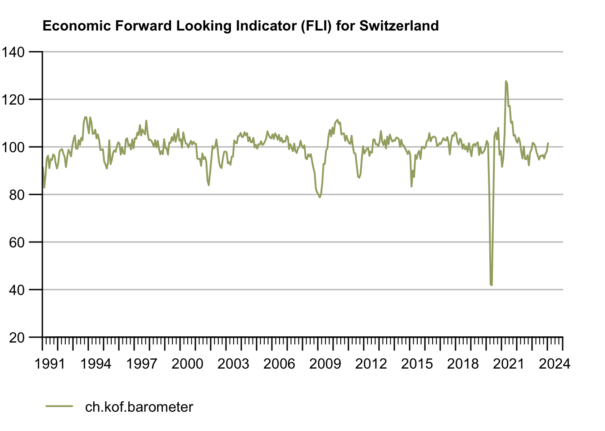

1 Introduction
The below sections first describe the crucial problem that the Open Time Series address, continue to explain how our background drives us and how our approach solves the problem. Our background in economic research and time series analysis in particular combined with our experience in regular publication of reliable economic indicators helps us understand both - the perspective of a data consumer and provider.
1.1 Problem Statement
Open Time Series bridges the gap between official statistics and academic econommic research in Switzerland. Even though most official statistics in Switzerland are publicly available, data publications from regional and federal public data providers often lack machine readability. Therefore, these data publications are not convenient for academic researchers and other groups that ingest public data frequently.
In the field of economics, for example, intertemporal comparisons play an important role. This type of research implies regular and timely sourcing of data. Traditional data publications are often unsuitable1 for the scientific consumer, as modern economic (forecasting) models make use of hundreds or thousands of variables stemming from a large range of datasets. Particularly, researchers who source a large amount of time series data from different providers suffer from the substantial difference in the pace of the digital transformation across providers or even different departments of the same providers.
Though application programming interfaces (APIs) from the official providers have led to great improvements in the machine readability of public data, machine readability is not homogenous across datasets. Open Time Series mitigates this dynamic problem by not only publishing time series data created from a fully transparent process, but also by providing an open technical processing framework. The Open Time Series framework eases the data sourcing and quality control burden and, at the same time, encourages researchers to contribute time series datasets of their own. In addition, Open Time Series establishes a steady and hands-on exchange between regional and federal data providers and the community of academic users of public data.
1.2 Background and Motivation
Though we aim to extend the approach suggested in this proposal to other fields in the future, this Explore proposal focuses on our ‘home court’ disciplines of public statistics and empirical economics. We are confident that our strong network in both of these fields will leverage our initial push enough to give the impact of the Open time series project a great chance to spill over to other communities. The following sections introduce our background and explain how the proposed project helps the economics, forecasting and open data communities.
Time Series Analysis, Forecasting and Data Science in Economics
Time Series analysis continues to play an important role in many strands of modern empirical economics: Economic forecasting and its evaluation, studies of shock absorption, and many other econometric modeling exercises ask for data that allow intertemporal comparison. Modern models often use hundreds, or even thousands, of time series.
Even though machine readability of publicly available data has improved in Switzerland thanks to great efforts led by the Swiss Federal Statistical Office (SFSO), researchers face a publication mindset that is focused on the wider public and hence on the most recent wave of data. As a consequence, variable names or features may change over time, and minor errors may simply get corrected on ad hoc basis or with the next publication — even in datasets that are already available through an application programming interface. In combination with different degrees of machine readability across different providers of public data, the issues mentioned above can lead to two very heterogeneous situations when it comes to automated data ingestion, particularly for those researchers who need a large amount of data from various providers. Another aspect in which the focus of public data providers differs from academic research is the importance of readily available, so-called real-time vintages. Vintages can be seen as versions of time series that allow researchers to work with past publications even after the official version has been revised. While versioned time series are inevitable for many research exercises, such as the evaluation of forecasts based on the data that had been available when the forecast was made, multiple official versions are harder to communicate to the broader public and induce higher data management costs.
Our motivation is to help the time series community immediately, while larger organizations address different challenges in their own digital transformation. We intend to do so by not only open-sourcing a framework to create scientific grade time series from official statistics, but also publishing our framework in the most transparent way possible:
Motivation through Immediate Impact
We focus on thorough documentation that involves the community.
We provide comprehensive application examples facilitating transfer to one’s own needs, making many thousand proven time series publicly available.
Machine-readable data and the Open Time Series automation framework substantially facilitate hosting a versioned time series database.
We have an infrastructure-as-code approach and share precise information on how to set up an environment that is capable of running our framework.
Sustainability through Cooperation: Official Statistics and Public Data
At the same time, our commitment to regular publication of data-driven indicators designed for intertemporal comparison and our leading role in the community ensures the sustainability of the Open Time Series effort. The strong empirical focus of the academic research of the KOF Swiss Economic Institute at ETH provides great synergies with the production of forecasts and indicators, many of which rely on publicly available data provided by federal and regional administrations.
In addition to its popular indicators for the Swiss economy, KOF makes a wide array of fine-grained, sector-specific time series publicly available. At the time of composing this ORD proposal, the KOF time series explorer made more than 31’000 time series publicly available in human-browsable and machine-readable fashion alike2. This experience with the regular publication of economic data, the production of indicators, economic forecasting and KOF’s national mandate to monitor the Swiss economy makes us relate further to the needs and challenges of official statistics. Through our steady exchange with key data providers and data consumers such as the Swiss National Bank (SNB), the Swiss Federal Statistical Office (SFSO), the Secretariat of Economic Affairs (SECO), the State Secretariat of Education, Research, and Innovation (SERI) and the cantonal statistical offices, we are aware that other institutions have often cumbersome, semi-automatic data sourcing processes to process publicly available that are highly redundant across institutions. Hence, not only open-sourcing our implementation but also committing to put in substantial additional effort to make our solution inclusive and transparent to others will impact the community in three sustainable ways:
Motivation through Sustainable Impact
i.) We help reduce redundant implementation across publicly financed institutions
ii.) We establish a channel designed to be understood across institutions and fields to communicate the needs of the research community in a highly dynamic environment
iii.) We develop a blueprint for data consumption in a collaborative fashion, increasing the commitment of involved collaborators
The horizontal and upstream feedback generated in the process is a core strategy of the Open Time Series project that we validated in talks with official data providers in advance of this proposal. Communication through code is unambiguous and reproducible and helps to communicate needs across fields, perspectives, and focuses.
Further concrete steps could be the integration of FSO experts into teaching or the use of Swiss data in academic teaching and open-source software packages.
The Open Time Series project can build on an established network for great outreach and at the same time, unleash an entirely new group of publicly available, scientific use grade time series datasets. While the vast majority of the existing, aforementioned KOF time series stem from KOF’s own business tendency surveys, the Open Time Series project facilitates research use of additional data stemming from other providers, most notably the Swiss Federal Statistical Office (FSO). In addition to such major sources of macroeconomic data, the Open Time Series project helps to make the maintenance of other research use grade time series from smaller, independent providers more sustainable. Community maintainers can use the Open Time Series framework to process datasets from smaller providers with less capacity in a transparent fashion that allows them to eventually pass on maintenance and share workloads among stakeholders. Our approach allows researchers to publicly archive data and reproduce results more easily.